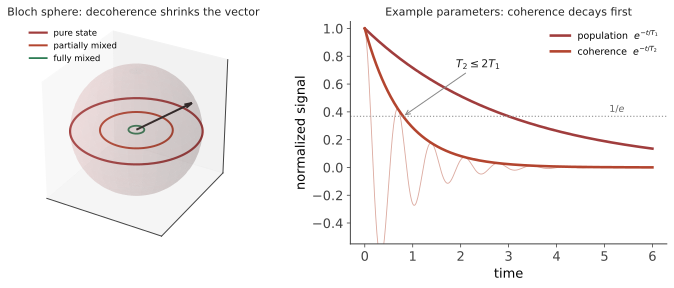

本页目录
开放量子系统 · 退相干与主方程
对标：Breuer & Petruccione《The Theory of Open Quantum Systems》/ Nielsen & Chuang ch.8 / Zurek RMP 2003 ｜ 本页自足：不假设你熟悉密度矩阵，会从头搭起来。 你在量子力学课上学的薛定谔方程，描述的是一个与世隔绝的系统。而现实中没有任何系统与世隔绝——它总在与空气分子、热辐射、周围的电磁场交换着什么。本页处理这个"现实版"的量子力学，并回答一个几乎人人都问过的问题：既然电子可以同时在两处，为什么桌子不行？

1. 先补一件工具：为什么需要密度矩阵
波函数不够用的场合。 设想两种情形：
(a) 一个自旋处于叠加态 \(|\psi\rangle = \tfrac{1}{\sqrt2}(|\uparrow\rangle+|\downarrow\rangle)\)； (b) 一个自旋，有 50% 概率是 \(|\uparrow\rangle\)、50% 概率是 \(|\downarrow\rangle\)，但我们不知道是哪个。
沿 \(z\) 方向测量，两者给出完全相同的结果（各 50%）。但沿 \(x\) 方向测量：情形 (a) 确定给出 \(+x\)，情形 (b) 仍是各 50%。
所以它们是不同的物理状态——(a) 是相干叠加，(b) 是经典的无知。而波函数只能描述 (a)。
密度矩阵把两者统一进同一个对象：
对情形 (a)：\(\rho_a = \tfrac12\begin{pmatrix}1&1\\1&1\end{pmatrix}\)；对情形 (b)：\(\rho_b=\tfrac12\begin{pmatrix}1&0\\0&1\end{pmatrix}\)。
区别全在非对角元上。 对角元是"在各基态上的概率"，非对角元（称为相干项）编码了叠加的相位关系——它才是量子性的所在。
判据：\(\mathrm{Tr}(\rho^2)=1\) 为纯态（可用波函数描述），\(<1\) 为混合态。
2. 系统 + 环境：约化密度矩阵
现在考虑一个系统 \(S\) 与环境 \(E\)。整体是封闭的，遵守薛定谔方程；但我们只能测量系统。
"只关心系统"在数学上叫求偏迹（partial trace）：
直观地说：把环境的所有可能状态求和平均掉，剩下的就是我们能观测到的一切。
关键现象出现了。 设系统初态为叠加 \((|0\rangle+|1\rangle)/\sqrt2\)，环境初态 \(|E_0\rangle\)。若相互作用使得
即环境"记录"了系统处于哪个态（这就是"环境在测量系统"的确切含义），则整体态变为纠缠态 \(\tfrac{1}{\sqrt2}(|0\rangle|E_0\rangle+|1\rangle|E_1\rangle)\)。求偏迹后：
非对角元被乘上了环境态的交叠 \(\langle E_1|E_0\rangle\)。 当环境的两个状态变得几乎正交（\(\langle E_1|E_0\rangle\to0\)，意味着环境"确凿地记录"了信息），非对角元趋于零——叠加的相干性消失了。
这就是退相干。 注意它的机制：信息泄漏到环境中。系统本身没有"坍缩"，只是它与环境纠缠了，而我们看不到环境。
3. 为什么桌子不会处于叠加态
上面的机制给出了一个可以估算的时标。物体越大、与环境耦合越强，环境记录信息越快，退相干越快。
粗略的量级感受（具体数值依模型与环境而异，此处只取量级）： - 孤立原子在超高真空中：相干可维持秒量级； - 超导量子比特：微秒到毫秒（这正是量子计算工程的主战场）； - 一粒尘埃，仅受宇宙微波背景辐射照射：退相干时间远小于一秒； - 一只猫：退相干时间小到没有任何意义。
结论：宏观物体的叠加态并非被禁止，而是维持不了任何可观测的时间。 你无法看到桌子的叠加，不是因为量子力学在大尺度失效，而是因为环境无时无刻不在"测量"它。
这是二十世纪后期量子基础研究最重要的洞见之一：经典世界的"经典性"不是外加的公设，而是从量子力学 + 环境相互作用中涌现出来的。
但必须诚实地划一条线【重要】：退相干解释了"为什么看不到干涉"，却没有解释"为什么最终只出现一个确定的结果"。 - 它把相干叠加变成了看起来像经典概率混合的东西； - 但"到底哪一个真的发生了"——这个测量问题依然存在，不同的量子力学诠释（多世界、导波、客观坍缩等）对此给出不同回答。 退相干是一个被广泛接受的物理机制，不是对诠释问题的解决。 混淆这两件事是这个领域最常见的误传。
4. 主方程：把演化写下来
我们希望有一个只涉及系统的演化方程。在若干合理近似下（环境很大且很快"忘记"过去，即马尔可夫近似；系统与环境耦合较弱），可以证明最一般的形式是 Lindblad 主方程：
逐项理解： - 第一项就是熟悉的薛定谔演化（写成密度矩阵形式）； - \(L_k\) 称为 Lindblad 算符或跳跃算符，每一个代表环境施加的一种"作用方式"； - 第一部分 \(L_k\rho L_k^\dagger\) 描述"跳跃发生了"，后面的反对易项保证概率守恒。
为什么形式必须是这样：它是保证 \(\rho\) 始终保持厄米、迹为一、且半正定（即始终是合法的物理状态）的最一般演化。这不是一个模型假设，而是一个数学定理（Gorini–Kossakowski–Sudarshan–Lindblad）。
两个最常用的例子：
振幅衰减（\(L=\sqrt{\gamma}\,\sigma_-\)）：激发态往基态跌落。这就是自发辐射，时标记作 \(T_1\)。
纯退相位（\(L=\sqrt{\gamma_\phi/2}\,\sigma_z\)）：能量不变，但相位被随机扰乱，非对角元指数衰减。
合起来定义两个实验上最常报告的量：
\(T_1\) 是能量弛豫时间，\(T_2\) 是相干时间，且总有 \(T_2\le2T_1\)。 一般 \(T_2\ll T_1\)——相干性比能量更脆弱，因为扰乱相位比夺走一份能量容易得多。
5. 测量：比"坍缩"更完整的描述
初等量子力学里的测量公设（投影 + 坍缩）其实是理想情形。更一般的框架叫 POVM：一组算符 \(\{M_m\}\) 满足 \(\sum_m M_m^\dagger M_m = I\)，结果 \(m\) 的概率为 \(p_m=\mathrm{Tr}(M_m^\dagger M_m\rho)\)，测后态为 \(M_m\rho M_m^\dagger/p_m\)。
它能描述投影测量做不到的事：不完美探测器、只提取部分信息的弱测量、以及"测量导致的反作用可以被调节"这一事实。
连续弱测量是当今实验的常规手段：不断地轻微窥探系统，一边获取信息一边尽量少扰动。Haroche 与 Wineland 因用这类方法直接观测单个量子系统的退相干过程而获 2012 年诺贝尔物理学奖——退相干从理论预言变成了可以逐帧录像的实验现象。
6. 为什么这一页在今天很重要
量子技术的全部工程难度，几乎都可以归结为"对抗退相干"：
- 量子计算：算法能跑多深，取决于 \(T_2\) 与门操作时间之比。量子纠错的整套理论（纠错码、阈值定理）就是为了在有噪声的硬件上维持相干；
- 量子传感：相干时间越长，可积累的相位越多，灵敏度越高；
- 量子通信：光子在光纤中的退相干限制了距离。
同时它也给出一个反向的洞见：退相干并非纯粹的敌人。耗散可以被设计——通过工程化的环境，可以把系统驱动到想要的量子态（耗散态制备），这是近年的活跃方向。
7. 要点回顾
- 密度矩阵统一描述相干叠加与经典混合；区别全在非对角元；
- 退相干 = 信息泄漏到环境：环境"记录"了系统状态，求偏迹后非对角元被环境态的交叠压制；
- 宏观叠加不是被禁止，而是维持不了可观测的时间——经典性是涌现的；
- 退相干解释了干涉的消失，没有解决"哪个结果发生"的测量问题——两者必须分清；
- Lindblad 方程是保持物理合法性的最一般演化，\(T_1\)、\(T_2\) 是它的两个基本时标，且 \(T_2\le2T_1\)；
- 量子技术的核心工程问题，就是与退相干赛跑。\(\blacksquare\)
下一页：既然相干性如此脆弱，实验上如何造出并维持宏观的量子态？答案是把物质冷到接近绝对零度——冷原子物理。